虾哥问你一个问题：死亡是什么？
你也许会感觉很不舒服，因为死亡......就是死亡
你不会，也不想思考这个问题，但是，当你长大，自己的家人离去的时候
你就不能不面对这个问题。
那么，当这个问题落在一个四岁的小女孩身上，她会怎么看待和面对呢？
今天虾哥就给大家推荐这部非常感人的电影，它的名字叫《小孤星》，主要讲述四岁女孩波纳特经历了一场家庭悲剧：母亲死于车祸，父亲又无法向一个不知死亡为何物的小孩解释清楚。后来，女孩通过自己的方式，用童真的眼光来理解母亲的突然离去........
在成人世界里,死亡、信仰难以理解，那么对于孩子呢？
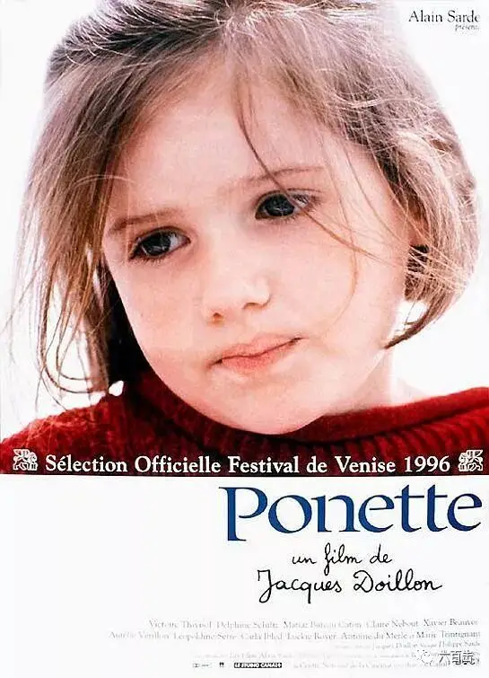
影片非常感人，四岁小演员的精彩表演收获了威尼斯影展最佳女主角，爱好电影的朋友，都会知道这个奖项的含金量有多高，截止到目前，我们国家只有两个人拿过这个奖，巩俐凭着《秋菊打官司》曾获第四十九届威尼斯国际电影节最佳女主角，夏雨凭着《阳光灿烂的日子》曾获第五十一届威尼斯国际电影节最佳男演员。
本片在豆瓣评分也高达 8.2
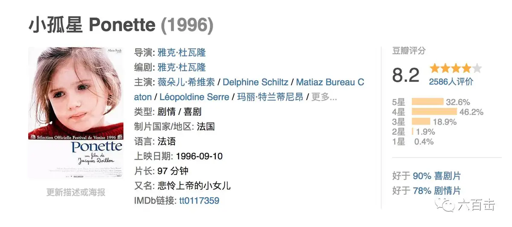
电影和小女孩的表演让人惊艳
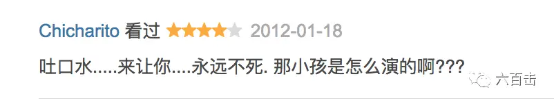
电影充满了童真和想象，电影刚开始，爸爸试图向波纳特解释发生了什么：”妈妈死了，你知道这意味着什么? "
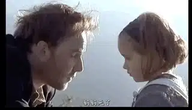
小女孩没有哭，但是我们能感受到微微转动的眼睛背后的那缕悲伤，波纳特起身爬到车顶上，告诉爸爸“她乘着魔镜飞走了”
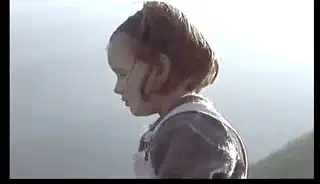
之后爸爸要去外地打工，将波纳特交给了她的姑姑，
大家都很同情波纳特，姑姑告诉波纳特，你的妈妈只是去了天堂
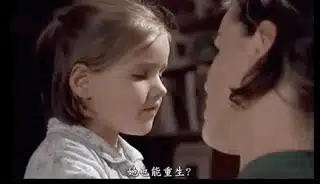
之后她的姑姑向波纳特讲了耶稣复活和空坟墓的故事，告诉波纳特他们将来可以在天堂重逢，波纳特非常相信姑姑的话，在她理解，天堂只是一个地方，妈妈可以随时回来看她。
波纳特大大的眼睛之下总是心事重重，她总是抱着她的娃娃独自坐在一边，等待着妈妈的到来
她告诉布娃娃，你最好乖一点，不然妈妈不来了
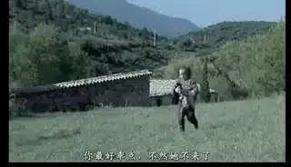
波纳特的小侄子，告诉波纳特，你的妈妈死了，不会再回来了
波纳特说“妈妈在天上，身边有七彩的牛羊，妈妈有座城堡，金瓦红墙，我晚上和妈妈住在那里，白天才在这里........我更喜欢晚上。” 不信，你可以问问娃娃
小男孩说你骗人，为什么我的爷爷死了就没有再回来
波纳特告诉他：因为没人等他 (被感动哭了)
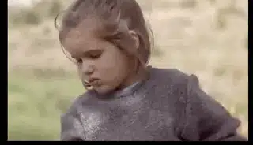
之后她独自躲到没有人的地方，说：大家都走了，你可以来了，为我而来。
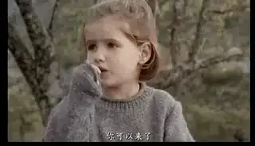
可是妈妈并没有出现，波纳特又试着小朋友告诉她的另一个方法，她要用复活咒语将妈妈复活，而波纳特念的那句咒语是马可福音中的一句话：“大利大古米！”（翻出来就是说：“闺女，我吩咐你起来！”）
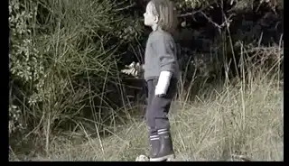
姑姑非常担心波纳特，告诉波纳特妈妈不会回来了，波纳特却在和姑姑不停地讲着小老鼠可以倒着飞的故事
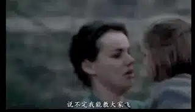
姑姑看着波纳特沉浸在自己的悲伤世界无法自拔，没有办法，姑姑只能叫波纳特的父亲回来，爸爸告诉波纳特，上帝、天堂都是假的，妈妈永远离开我们了，“回到活人的世界！自己骗自己，岂能抑制悲伤？”
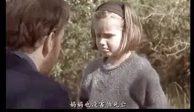
悲伤的波纳特后来去了寄宿学校，她还是每天想着妈妈，忽然有人告诉她一个办法：你的妈妈去上帝那里了，她不能和你直接说话，但是你可以向上帝祈祷，让上帝把你的妈妈带回来。
于是波纳特等大家睡着后，偷偷的来到上帝的房间（祈祷室）
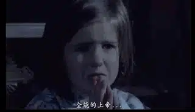
波纳特向上帝祈祷：
全能的上帝
你知道我的妈妈死了
他在你那里了
我想跟妈妈说话
我试过不行
她都不回答
让她跟我说话吧
全能的上帝
希望你已经
告诉妈妈我的祈祷
为你而祈祷
也为她
我没事
我在床上等
那样就没人能看见了
波纳特还是没有听到妈妈的声音，她问自己的同学，怎么才能够和妈妈说话，同学告诉她，除非你变成上帝的女儿
为了成为上帝的女儿，波纳特需要经受考验
她要戴上眼镜穿过“地狱”的烈火
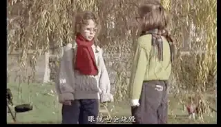
还要在垃圾桶里呆上五分钟
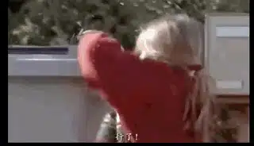
波纳特通过层层考验成为了上帝的女儿
这时一位调皮的男孩，却告诉波纳特，一个人的妈妈死了，是因为小孩太坏
波纳特哭着说：如果我妈妈还在，你就不会这么说
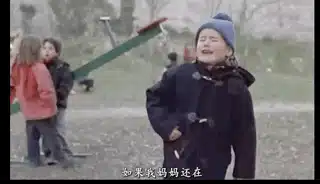
波纳特嘴上说着自己不坏，但到了晚上，她说，“我想死，我想从此消失，去妈妈那里”。
萌萌的小侄子非常暖心的安慰她：你很乖，我也很乖
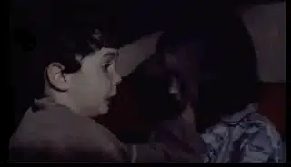
第二天，波纳特还是独自跑到墓地，用稚嫩的双手扒着坟上的土，喊着，妈妈，我来了
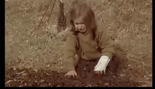
想不到，妈妈最后真的出现了，妈妈害怕波纳特着凉，还带了一件红色外套
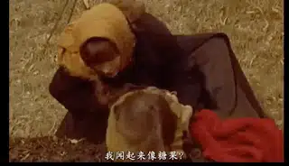
妈妈告诉波纳特
“
自己濒死时还有机会
但我一下放手了
没有挣扎，撒手人寰
这样对你很残忍
没顾虑你，我太自私了
我没恶意的，说再见需要时间
快到下面的尽头时
我听见你喊我
直呼唤我
我大声叫你
告诉你这样不值得
接着不知道发生什么事.....
昨晚你抱着我，我才回过神来
我回来就是让你承诺，
不再哭泣
不再悲伤
我女儿不会害怕生活
大地就踩在你的脚下
尝试每一样事情
所有事情，能漠不关心么
不能 ! 要在乎生活
”
当爸爸找到波纳特的时候，波纳特告诉爸爸：妈妈和我说，她要我学会快乐
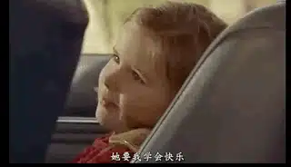
此处应有预告片，一同感受最年轻影后的魅力
这部收获很多奖项的电影不只是一部简单的儿童电影，它探讨的话题很沉重（死亡），而面对的方式也非同寻常（信仰），这些问题在成人世界中，我们会用各种复杂的知识和理性去探讨，而本片却以一种小孩子的直觉去看待。
当波纳特沉浸在悲伤无法走出来的时候，大人用信仰安慰她，波纳特相信天堂、也相信上帝、也明白耶稣的复活，天堂的盼望在波纳特心中，恐怕要比成年人更加真实，难怪，波纳特的姑姑感慨：我也像小孩一样信仰上帝，但你直接找到上帝了，像是你妈妈曾经带你去了天堂，归途满载上帝的爱。
电影中的小孩甚至用他们的方式讨论天主教、犹太教、基督教之间的区别，而许多他们充满童真的话，却比我们这些成年人来的更加深刻真实，比如说波纳特问艾达上帝的声音是怎么样的，艾达回答说：深沉，在哪都能听到，左边、右边、上边、下边、前面、后面。
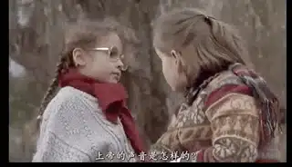
再比如当姑姑试图帮助整天离群索居的波纳特的时候，她对波纳特说，“我做主，你不能这样下去”，而波纳特则用孩子般的坚毅说“是耶稣做主”
小孩子脱口而出的话，带给我很大的冲击，原来信靠就是这么的简单，怪不得耶稣说：你们要像小孩子，才能进天国，因为天堂是他们的。
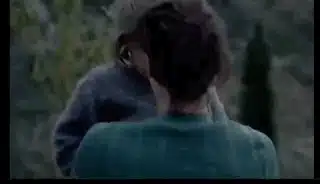
孩子的世界，对于天堂、永恒甚至死亡有着极富情感的想象力，他们对于死亡和天堂的认识更接近圣经。
电影的结尾非常暖，妈妈回来告诉波纳特，要好好面对生活，要学会快乐。这不正是圣经中那份跨越死亡的信仰：一宿虽有哭泣，早晨必欢呼。
愿主安慰在得州被枪击杀害的27位弟兄姐妹的家人：他们在天堂，有耶稣做主，你们要快乐面对明天。
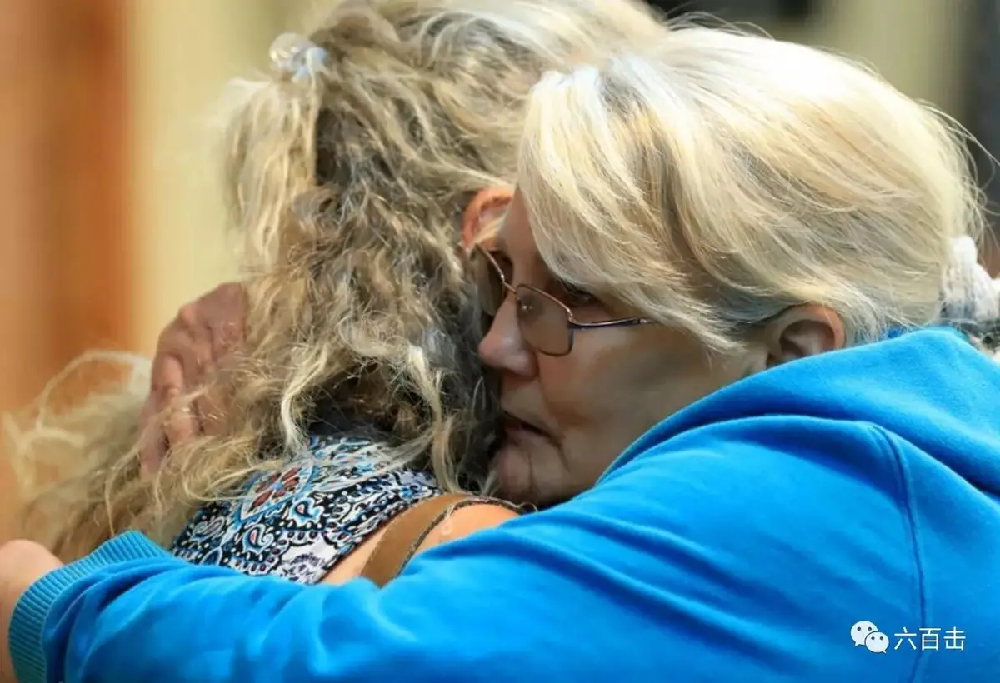
关注并回复： 小孤星 获取电影资源
相关阅读：
邪恶有时候会被合理化，甚至科学化
请收藏转发 | “宗教改革”电影大全，一同纪念500年前的今天（内有资源）
不刷这篇影评，你看不懂《银翼杀手2049》
《乡愁》 | 没有一个人能够将信仰拍的如此诗意和凝重
一个唯科学主义者的悲剧
这里没有挑逗你眼目情欲的小鲜肉
也没有挑动你肉体情欲的段子
更没有膨胀你今生骄傲的鸡血
我们只在乎那些最质朴真诚的作品
在那里我们才能恢复真正的想象力
我们也坚信这才是我们真正需要的

ID:Six_hundred_hits
长按二维码，一键关注
【六百击】
-END-
电影评论
尽情分享朋友圈

苹果打赏通道